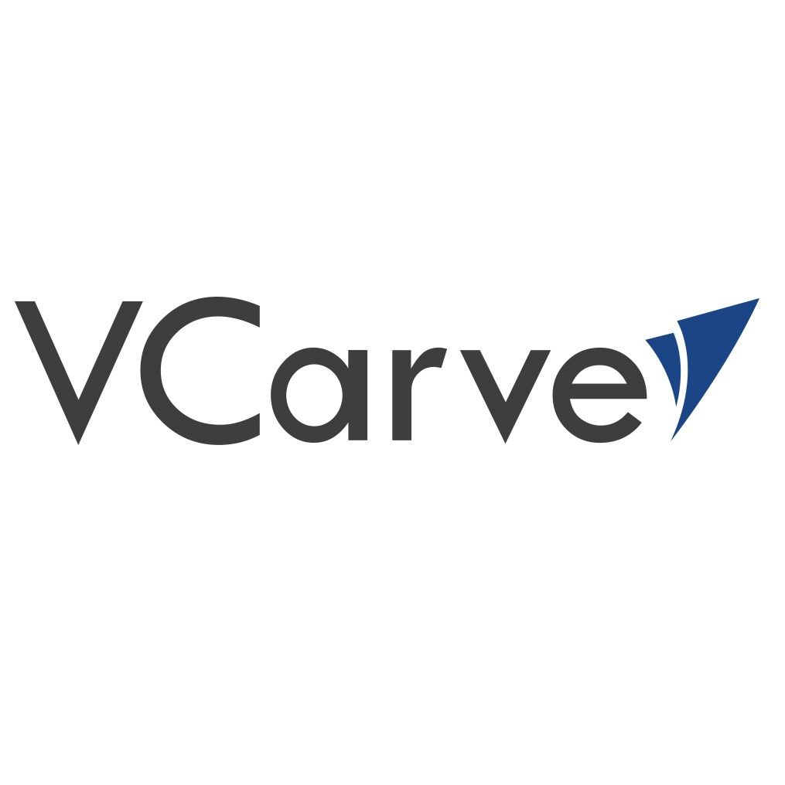
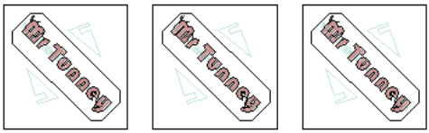
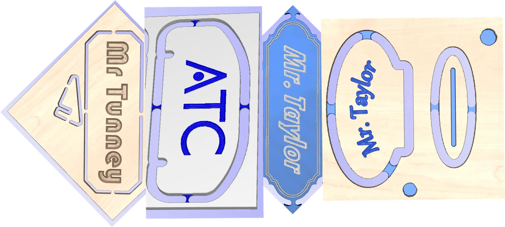
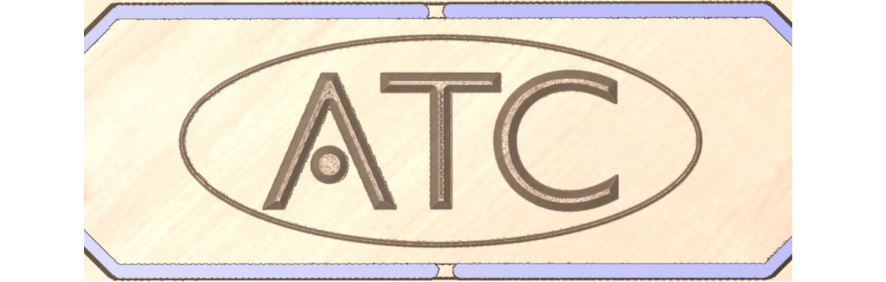
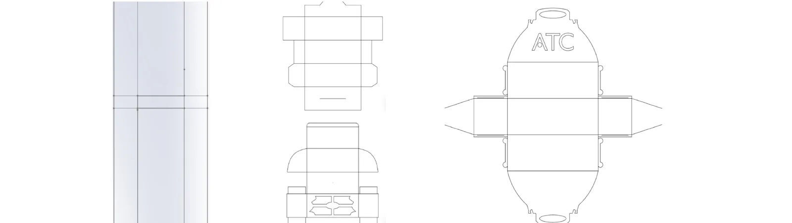
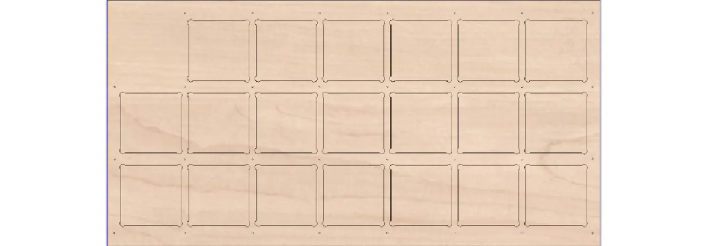
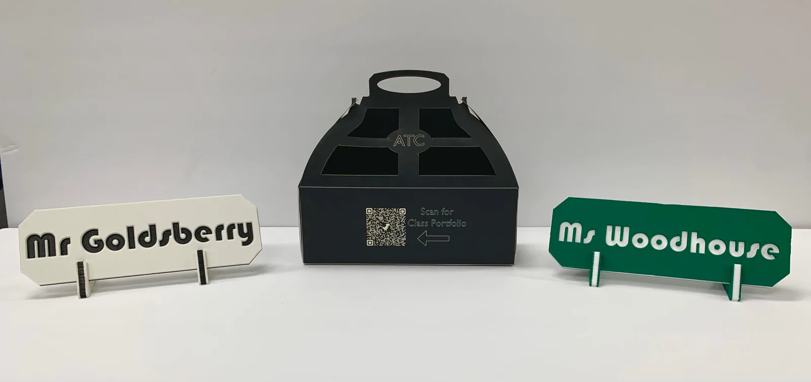
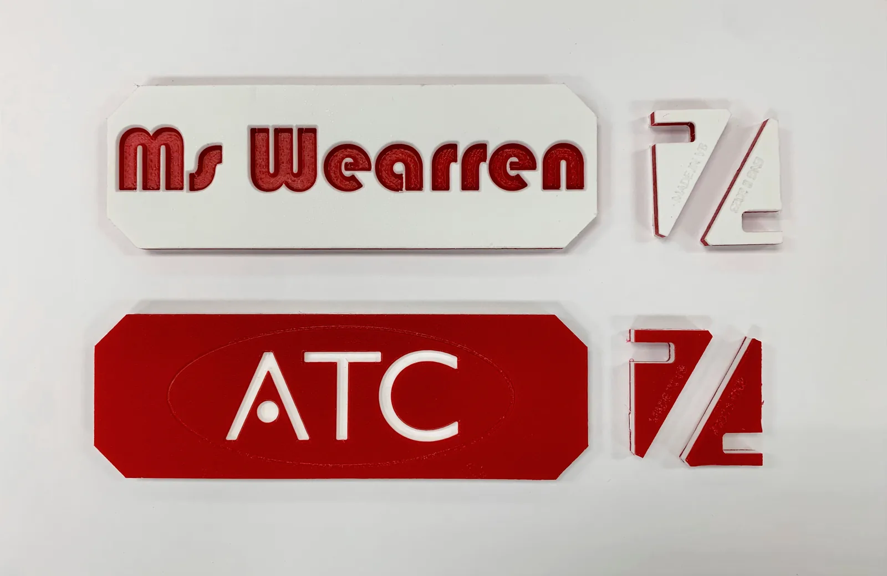
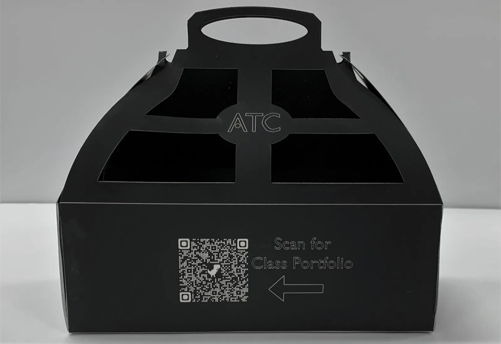
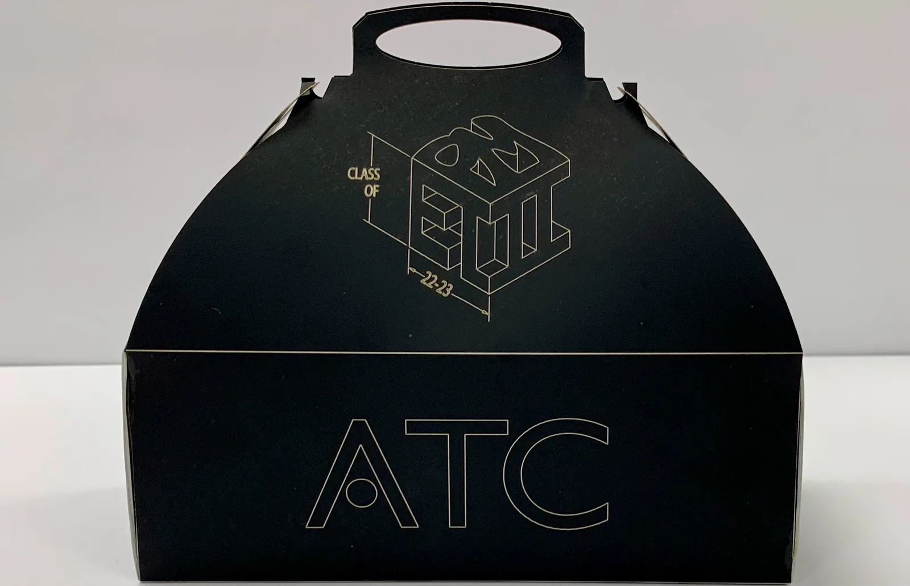

Unit: Processes of Manufacturing

Computer Aided Manufacturing - The use of software and computer controlled machinery to automate a manufacturing process. In Eningeering Technology II, V-Carve CAM software is used to program the CNC router.
Computer Numerical Control - A method for automating control of machine tools through the use of software embedded in a microcomputer attached to the tool. It is commonly used in manufacturing for machining metal and plastic parts.
Computer Aided Design - The use of computer-based software to aid in design processes. Typically CAM software is used by engineers to virtually design parts with 2D sketches and 3D models.
To preface this project, our class began with tutorials on a CAM software called V-Carve. This allow us to program toolpaths for the CNC router allowing it to make the necessary cuts to create the nameplates and perform two sided machining operations.

To diversify the initial designs, the class was split into groups to create variety of designs after which the class compared the designs selected the final design heavily valuing the aesthetics and cycle time of each.

After the final design was selected, tests were run of the design individually and revisions were made in order to increase the quality and efficiency. Some of the revisions made included adding a chamfers, adding a circle around the ATC logo, and adjusting speed and feed rates.

While Group 1 was revising the nameplate design, the other teams created initial designs for the packaging. These were done by creating designs in Adobe Illustrator and using a CNC laser cuter to cut out the designs quickly and precisely. One of these packaging designs were selected primarily based off of aesthetics.

With Group 4's design being selected, individual boxes were created and tested. Multiple iterations were created in order to perfect the final design. Those included locating the tabs to the inside of the box, adding a logo and copy on the outside of the design, and changing the material to reduce costs and lower weight.
In order to machine more than 1 nameplate at a time, a fixtured needed to be made to hold all of the stock during the CNC operations. In this design, we press fit the stock into a fixture designed with tight tolerances to hold it in place during the run.





After my group's design was selected, we were assigned the responsibility the products fabrication. Throughout the production, I had to refer to the engineering design process in order to effectively design and mass produce the nameplates with my group.
Over the course of this project, my group and I had to work past a number of problems including how to minimize the amount of post-production operations, how to properly secure the stock during the CNC operations, and how to
For this project, I had to both work with a team to design and create a nameplate concept, and our team had to work with the other teams and was responsible for a certain part of the process that put the nameplate on the desks of ATC teachers.
Throughout the course of this project, I familarized myself with a 3-Axis Axiom CNC Router. I learned how to prepare files through CAM software and properly adjust the speed and feed rates to maximize efficiency without damaging the tool bits or the product.
This project required the use of the two sided machining feature where the product would be machined on one side, and flipped in an orientation that would allow CNC operations on the other side while maintaining tight tolerances.
To maintain identical orientations during the machining on each side, a jig was required to hold the stock in place and maintain its proper position in both the X, Y, and Z dimensions. While in theory, the jig should have done this quite nicely as the stock was press fit in, we did have some issues which can be found on the right.
The biggest thing I could change would be the material of the fixture. For this project, we were given wood which had been slightly warped. If done again, a thorough inspection of material could help us to avoid the uneven machining across each batch which led to the loss of multiple nameplates in our first run.
If you any questions or comments please let me know.